Events
▶ Leadership Development
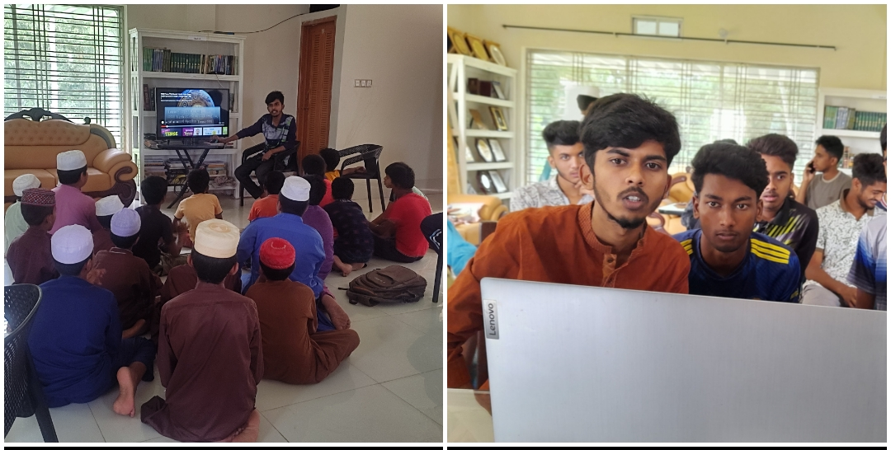➤ Leadership development is a process that helps individuals expand their ability to play leadership roles within organizations. Leadership roles can be formal, with associated authority to make decisions and take responsibility, or they can be informal roles with little formal authority.
▶ SSC Crash Course

➤Through SSC crash course we find out the latest preparation of the students of our own area i.e. the problems in which they have problems and arrange to solve them. They are given an idea of the complete book within a month. Also they can be informed about the status of their studies or how much they are improving by taking model tests.
▶ Congratulations for good result in SSC

➤Ashraf Excellence Center awards them for good results in the SSC examination and encourages those who will appear in the SSC examination later.
▶ Online Virtual Academic Training
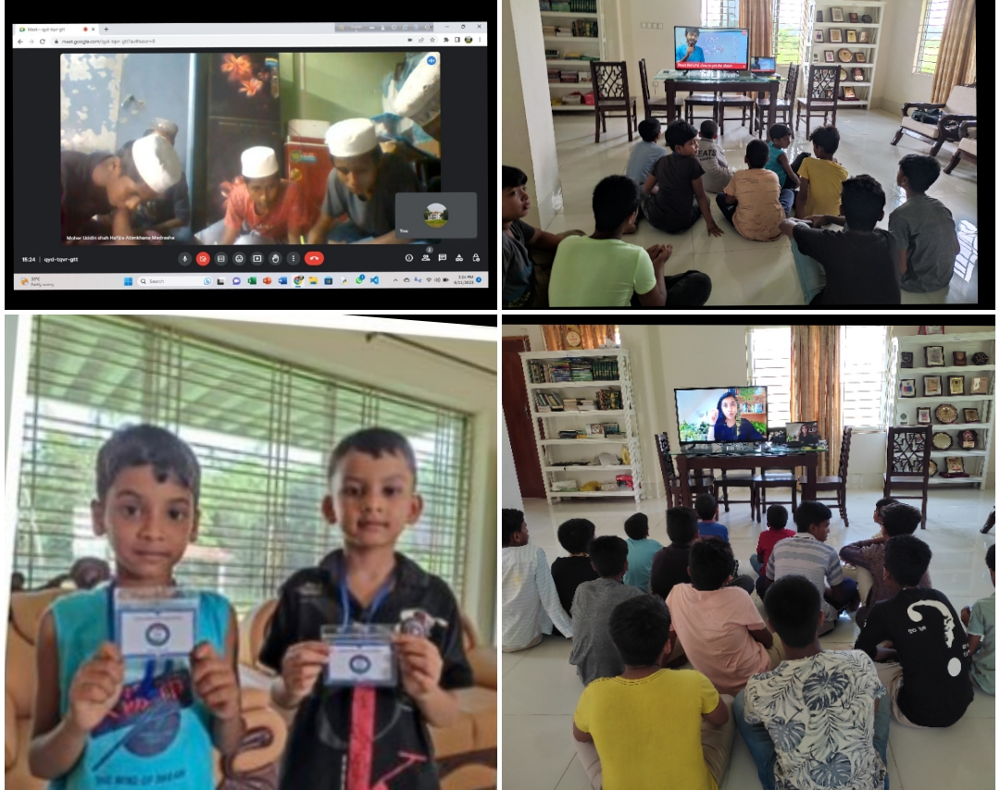➤Virtual learning refers to an environment where students study a digital-based curriculum taught by instructors that lecture online via video or audio. This instruction can take place either in a self-paced (asynchronous) environment or in a real-time (synchronous) environment.
▶ Community Care Initiative
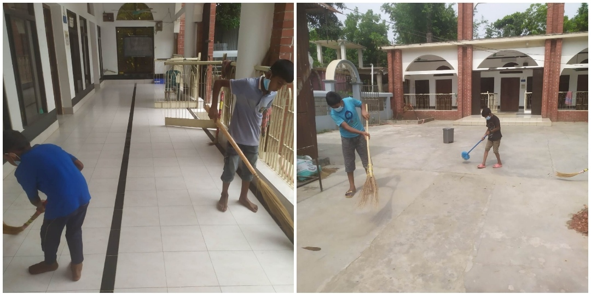➤ You need my awareness, not campaign to keep your country clean. Ten stick means one, you know? Let's be aware of how to keep the country clean. Your environment will be beautiful if you put the garbage in the dustbin instead of throwing it away. By doing this, the cleaning staff can take the garbage from a certain place. If there is no dustbin, dig a hole in the ground and fill it with soil. Our Ashraf Excellence Center kids go to different points of the area on a particular day of the week and inspire people to keep the environment clean. Garbage is asked to be thrown at a specific place. They give priority to places near mosques, schools and markets and make people aware of these issues.
▶ Health Workshop
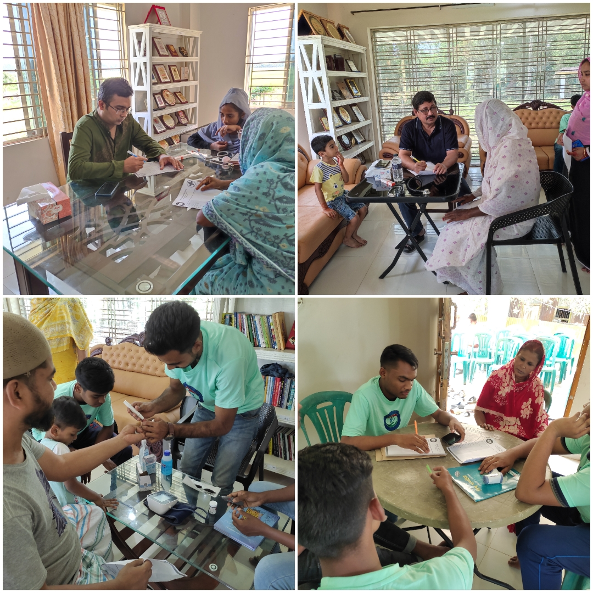
➤The healthcare mission refers to the overall purpose and objectives of the healthcare system or organization. It outlines the core principles and goals that guide healthcare providers and stakeholders in delivering healthcare services and improving the well-being of individuals and communities. The specific mission can vary depending on the context, such as a government healthcare system, a private hospital, a nonprofit organization, or a global health initiative. However, the primary focus is generally on promoting health, preventing and treating illnesses, and ensuring access to quality care for all individuals.
The healthcare mission typically encompasses the following aspects:
Patient Care: Providing high-quality, compassionate, and patient-centered care to individuals, meeting their medical needs, and improving their health outcomes.
▶ Ready Mate Garments
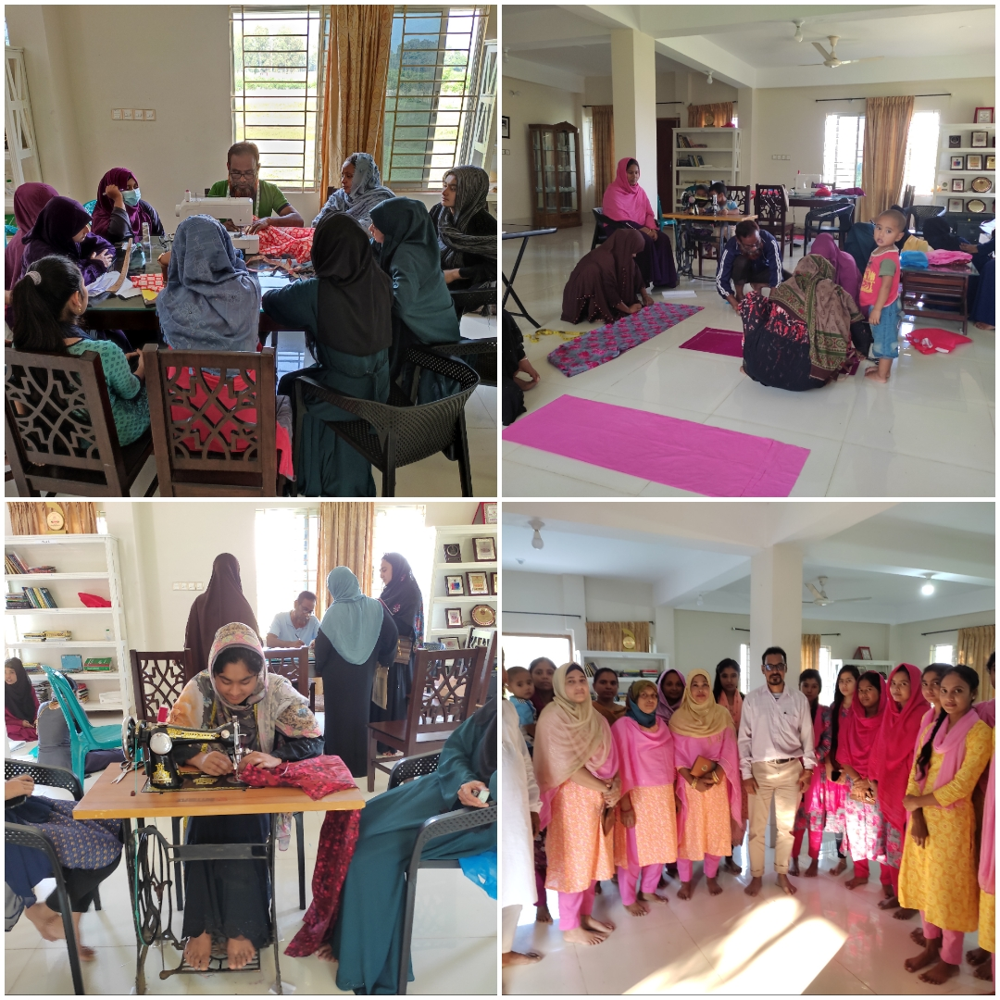➤RMG seeks to reduce dependency and make women earners so that they can support themselves. They are trained with high quality sewing machines and skilled teachers. By doing this, they will be able to sew their own clothes and earn extra by using their skills.
▶ CLRA:Common Leaving Relaxing Area
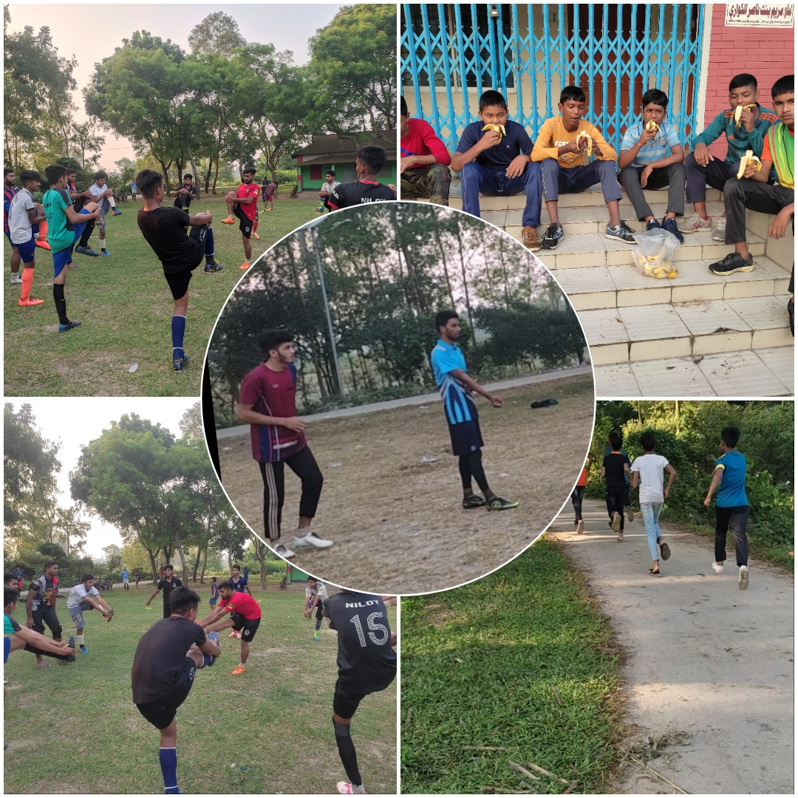➤Sports reduce anxiety, increase endurance and increase physical exertion. Sports like swimming increase lung capacity in humans. There is no alternative to sports to build a beautiful and fit body by removing fat etc. Sports also help in building character. And our aim is to develop them as good players through proper care.
▶ Web Development
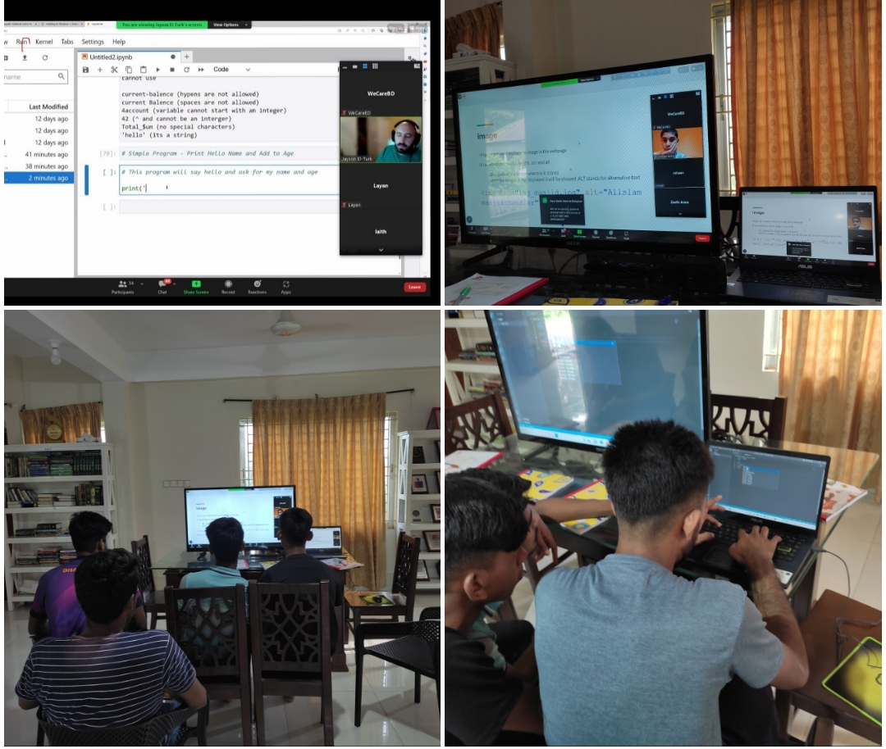➤Among the methods of earning through outsourcing, certain sectors have become quite popular these days. Such as the web development sector! The current demand of this sector is proving its future! Nowadays almost all offline business companies are considering website development for digitization with special emphasis. Due to which there is a huge demand for web development.
▶ FFLS: Food For Learning session
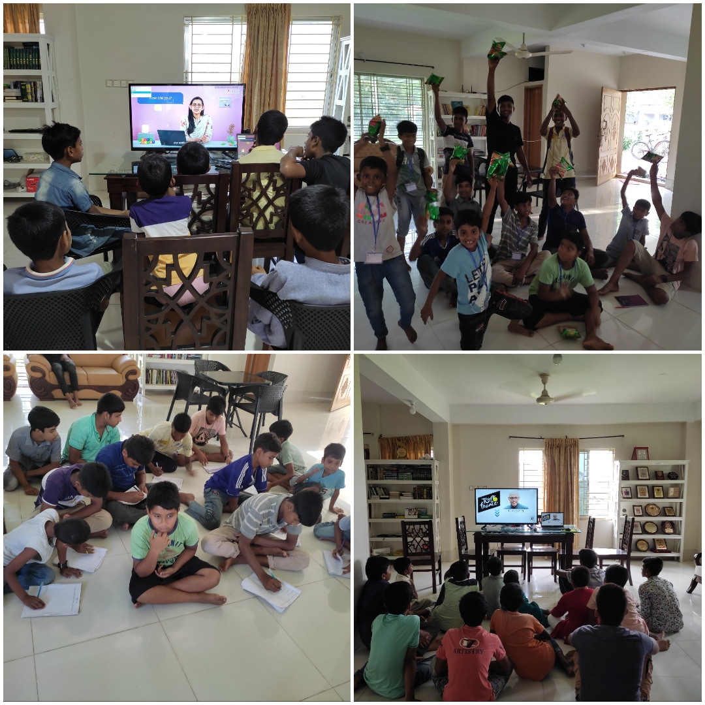➤ At first glance, the main purpose of education seems to be to establish oneself and lead a good life. People use various innovative processes to make their daily activities easier. Science and technology have made life easier. The main purpose of education is to make daily life easy and enjoyable. And we make them take classes on different subjects besides reading books to increase their general knowledge and they have light meals after reading so that they are more interested in reading.
▶ Mini Iftar
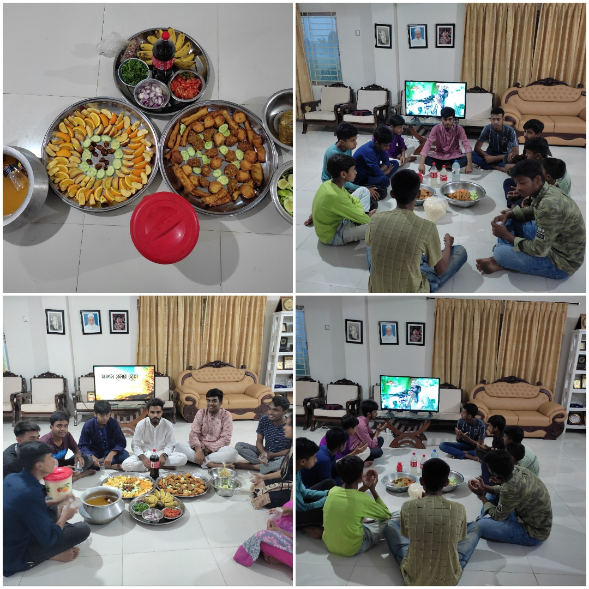➤ -The month of Ramadan is considered as the blessed month of Allah. -Fasting Muslims are more sanctified and have the opportunity to pray more than normal months. -Reciting Quran in Ramadan is a special virtue. -The month of Ramadan is a good time to give charity. - During the month of Ramadan, Muslims prepare for Arafat. And in this month of Ramadan, so that the children are interested in reading the Qur'an, keep fasting, and learn more about Islam, we organize iftar for them even if it is one day a week. In this way, they can know and learn about the importance of Islam at a certain time.
Eid Food Distribution
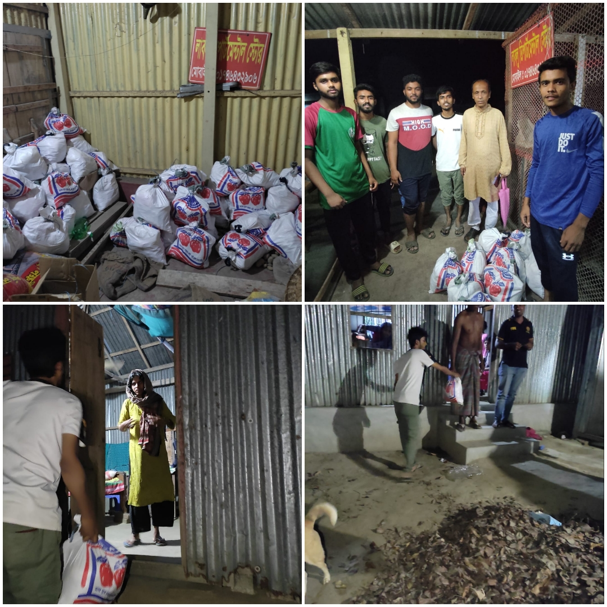➤The month of Ramadan teaches people charity, generosity, generosity and magnanimity. Donating in the service of people in the month of fasting without wasting any kind will benefit the needy people and benefit humanity. Allah says, 'O Prophet! Purify them by taking charity from their wealth, guide them (to the path of goodness) and pray for them in mercy. (Surah Tawbah: 103). Under the initiative of Ashraf Excellence Center, daily necessities are delivered to the homes of poor and needy people during the month of Ramadan. Because there are many people in the society who, despite being in need, cannot eat because of fear of shame. And we go door to door and give them to them in the middle of the night.
▶Eid Ul Adha Celebration
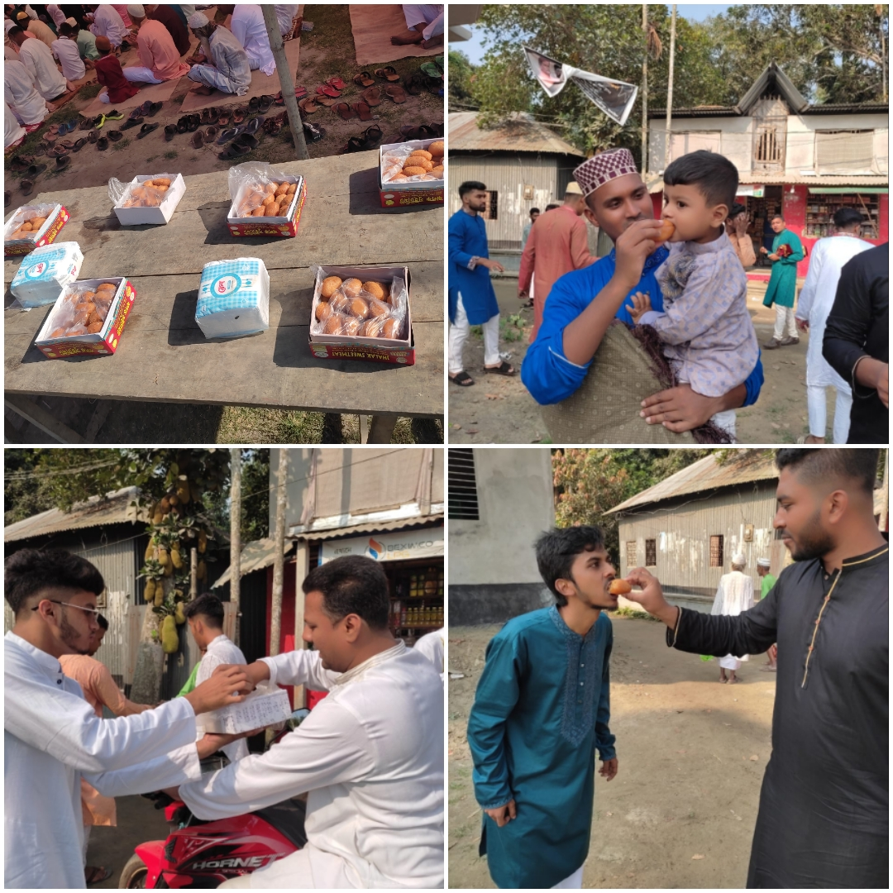➤ Eid means tide of joy. Eid means spreading happiness. After a long month of fasting, on the last day of Ramadan, the sweet smile of the curved moon in a corner of the sky heralds Eid. Everyone sings in the same tune that immortal song of Kazi Nazrul Islam, 'O man at the end of that fast of Ramadan, happy Eid came.' Eid-ul-Fitr brings a message of happiness every year in a unique-splendour. Once in a year this festival day returns with a gift of happiness and prosperity. This is why it is called Eid. Almighty Allah showers His mercy and grace on His servants through Eid every year. Eid-ul-Fitr is a day of vowing to keep the flow of Islam unbroken by virtues of self-purification, self-restraint, sacrifice, charity, generosity, forgiveness, magnanimity, communalism and humanity that the fasting person is anointed with by fasting. arrived We make sweet faces with everyone after the Eid prayers to share all the joy with everyone, we give chocolates to the children and the joy increases.